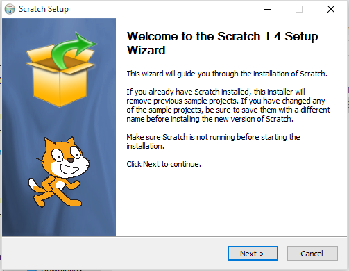
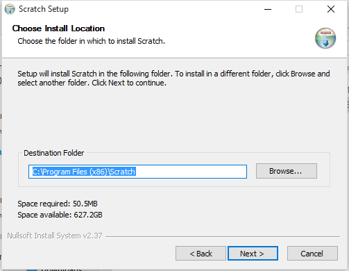
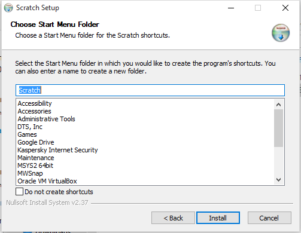
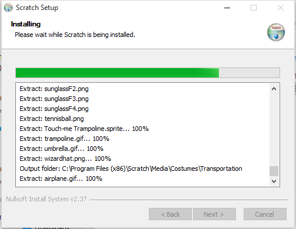
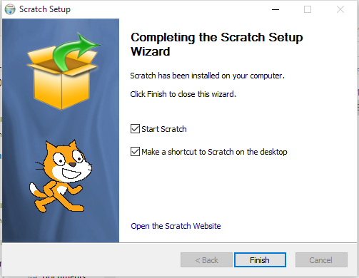
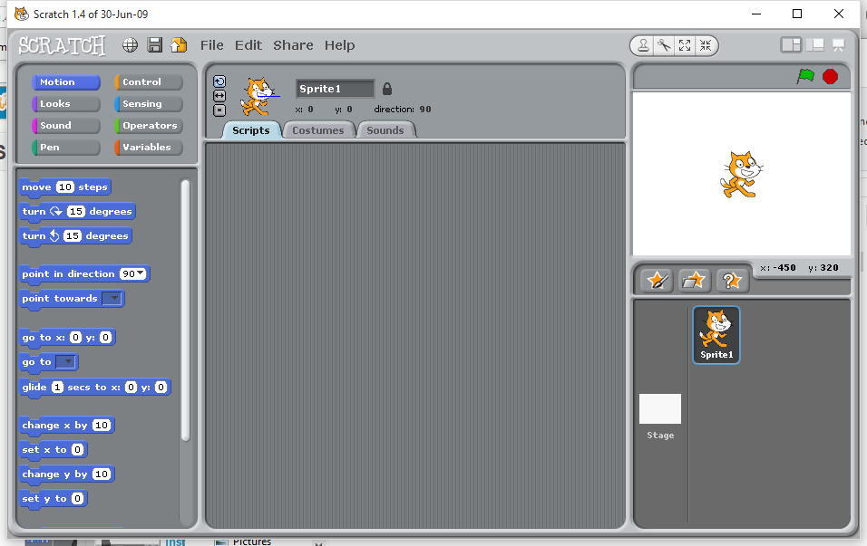

Installing Scratch 1.4¶
Your book references a program called Alice which can be used to build simple graphical programs that kids find fun to use. It was developed at Carnegie Mellon specifically to get kids, and especially girls interested in computers and programming. Scratch, developed at MIT for basically the same purpose, is a similar program, but I find it a bit more useful in this class. Basically we will use it as a simple way to introduce you to basic problem solving using fundamental concepts of computer programming. We do not need to get bogged down in typing in programs that need for you to be very careful in your typing, when all we want to do is get started.
Scratch can do that, and it should be fun. So, let’s start off by installing Scratch on your PC.
Windows Installation¶
Navigate to the Scratch website and download this file:
Once it is on your system, open up Windows Explorer and navigate to your Downloads folder. Double-click on the program name to start the installation.
Note
I installed this on a brand new version of Windows 10, just to try it out. There was a pop-up asking if this was OK. This message is displayed because you are installing a program on your system for all users. Just say OK, and press on, it is safe!
This is what you should see as the program installs:
     We will examine this screen in detail as we get started with the program.
Installing on Mac OS-X¶
I use Macs a lot in my software development. The Mac OS-X operating system is so close to Linux that if you know how to use one you can be productive on the other very easily. This is especially true if you use the command line to issue commands, rather than point and clicking with your mouse. If you work on servers, like web servers, you will use the command line a lot.
Scratch can be installed on Macs as easily as we just saw on the PC. We just need a different installer:
Once downloaded, open up the Mac Finder tool and check your Downloads folder. Double-click on the file name to start the installation.
You should see a simple window asking you to drag the application to the Applications folder. Do this and you are done!

{kind=link}
{kind=link}
{kind=link}
{kind=link}
{kind=link}
{kind=link}